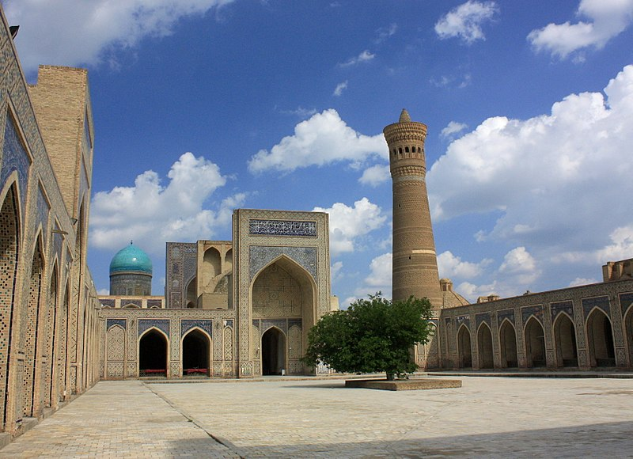

<!DOCTYPE html>
<html lang="en">
  <head>
    <meta charset="UTF-8" />
    <meta http-equiv="X-UA-Compatible" content="IE=edge" />
    <meta name="viewport" content="width=device-width, initial-scale=1.0" />
    <title>Document</title>

    <!-- CSS only -->
    <link rel="stylesheet" href="bukhara.css" />
    <link
    href="https://cdn.jsdelivr.net/npm/bootstrap@5.1.3/dist/css/bootstrap.min.css"
    rel="stylesheet"
    integrity="sha384-1BmE4kWBq78iYhFldvKuhfTAU6auU8tT94WrHftjDbrCEXSU1oBoqyl2QvZ6jIW3"
    crossorigin="anonymous"
  </head>
</html>
<body>
  <!-- Navbar -->
  <nav class="navbar navbar-expand bg-dark navbar-dark py-3 navbar-fixed-top" 
    <div class="container"> 
      <a href="samarkand.html" class="navbar-brand col-mm-4">Samarkand</a>
      <a href="khiva.html" class="navbar-brand col-mm-4">Khiva</a>
      <a href="gallery.html" class="navbar-brand col-mm-4">Gallery</a>
      <a href="index.html" class="navbar-brand col-mm-4">Home</a>
      
      <nav class="navbar navbar-dark bg-dark">
        <div class="container">
          <a class="navbar-brand"></a>
          <form class="d-flex">
            <input class="form-control me-2" type="search" placeholder="Search" aria-label="Search">
            <button class="btn btn-primary" type="submit">Search</button>
          </form>
        </div>
      </nav>
    <button 
    class="navbar-toggler"
  type="button" 
  data-bs-toggle="collapse" 
  data-bs-target="#navmenu"
  aria-expanded="true">
<span class="navbar-toggler-icon"></span>
</button>
<div class="collapse navbar-collapse" id="navmenu">
  <ul class="navbar-nav ms-auto">
    <li class="nav-item">
      <a class="nav-link" href="#" >Questions</a>
    </li>
    <li class="nav-item">
      <a class="nav-link" href="#" >Instructions</a>
    </li>
  </ul>
</div>
</div>
</nav>

<!-- Uzbekistan -->
<div class="container-fluid p-5 bg-primary text-white text-center <i class="fa fa-align-justify" aria-hidden="true"></i">
  <h1><strong>Bukhara</strong></h1>
  <h5>Get familiar with the beauty of Bukhara</h5>
</div>

<div class="container mt-4">
  <div class="row">
    <div class="col-sm-4">
      <h3>Kalân Mosque</h3>
      <h5>(1417–1420)</h5>
      <p>
        Po-i-Kalan, or Poi Kalan (Uzbek: Poi Kalon, Persian: پای کلان Pā-i Kalān, which means "At the Foot of the Great One"), is an Islamic religious complex located in Bukhara, Uzbekistan. The complex consists of three parts, the Kalan Mosque (Masjid-i Kalan), the Kalan Minaret (Minâra-i Kalân) to which the name refers to, and the Mir-i-Arab Madrasah. The positioning of the three structures creates a square courtyard in its center, with the Mir-i-Arab and the Kalan Mosque standing on opposite ends.</p>
      <div class="images">
        
      </div>
    </div>
    <div class="col-sm-4">
      <h3>Lab-i Hauz Complex</h3>
      <h5>(1619–1636)</h5>
      <p>
        Lab-e hauz, Persian: لب حوض, meaning by the pond) Ensemble (1568–1622) is the name of the area surrounding one of the few remaining hauz, or pond, in the city of Bukhara. Several such ponds existed in Bukhara prior to Soviet rule. The ponds acted as the city's principal source of water, but were also notorious for spreading disease, and thus were mostly filled in during the 1920s and 1930s by the Soviets. The Lab-i Hauz survived owing to its role as the centerpiece of an architectural ensemble dating back to the 16th to 17th centuries.</p>
      <div class="images">
      
    </div>
    </div>
    <div class="col-sm-4">
      <h3>Mir-i Arab Madrasah</h3>
      <h5>(1646–1660)</h5>
      <p>
        The construction of Mir-i-Arab Madrasah (Miri Arab Madrasah) is ascribed to Sheikh Abdullah Yamani of Yemen—called Mir-i-Arab—the spiritual mentor of Ubaidullah-khan and his son Abdul-Aziz-khan. Ubaidullah-khan waged permanent successful war with Iran. At least three times his troops seized Herat. Each of such plundering raids on Iran was accompanied by capture of great many captives. They say that Ubaidullah-khan had invested money gained from redemption of more than three thousand Persian captives into construction of Mir-i-Arab Madrasah.</p>
    
      <div class="images">
      

    </div>
    </div>
    </div>
  </div>
</div>
</div>

<div class="container-fluid p-2 bg-primary text-white text-center <i class="fa fa-align-justify" aria-hidden="true"></i">
<h3>Want to know more about Bukhara?</h3>
</div>

<div class="card">
  <div class="row no-gutters">
    <div class="col-mm-4">
      <div class="img-uzb"
    
    <div class="col">
      <div class="card-block px-2">
      </div>
        <p class="card-text"> The history of Bukhara stretches back millennia. In medieval times, Bukhara served as the capital of the Samanid Empire, Khanate of Bukhara and was the birthplace of Imam Bukhari.

          At the beginning of the 11th century, Bukhara became part of the Turkic state of the Karakhanids. The rulers of the Karakhanids built many buildings in Bukhara: the Kalyan minaret, the Magoki Attori mosque, palaces and parks.
          
          Bukhara lies west of Samarkand and was previously a focal point of learning eminent all through the Islamic world. It is the old neighborhood of the incomparable Sheik Naqshbandi. He was a focal figure in the advancement of the mysterious Sufi way to deal with theory, religion and Islam.</p>
 </div>
</div>
</div>
</div>
</div>
<nav class="navbar navbar-expand bg-primary navbar-dark py-1 navbar-fixed-bottom" 
<div class="container"> 
  <footer>
  <p id="copyright" class="copyright text">Copyright &copy; Nuradil</p>
</footer>
<button>❤Like</button>
</div>
</nav>
</body>
</html>